예스안과의원 의료장비 안내
예스안과의원은 정밀한 검사와 안전을 지향하는 수술을 위해 신뢰할 수 있는 전문 진단 및 계측 장비를 갖추고 있습니다.
기본 검사 장비
정밀 안과 진료의 기본이 되는 전안부 관찰 및 기초 측정 장비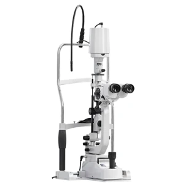
Zeiss SL-220
세극등 현미경. 각막, 수정체, 전방 등 눈 앞쪽 구조를 확대해 관찰합니다.
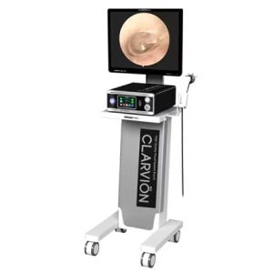
CLARVION
의료용 Full HD 카메라. 진료 중 눈 상태를 촬영·기록합니다.
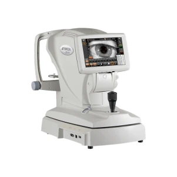
TOPCON ARK-800
자동 굴절검사기 겸 각막곡률계. 근시·원시·난시 정도와 각막 곡률을 측정합니다.
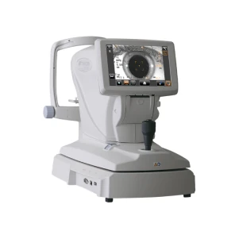
TOPCON NCT-800
비접촉식 안압계. 눈에 닿지 않고 공기를 이용해 안압을 측정합니다.
망막 · 안저 검사 장비
동공 확장 부담 없이 망막 주변부 및 안저를 정밀하게 평가하는 장비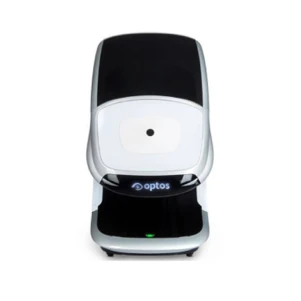
Optos Daytona
초광각 망막촬영 장비. 동공을 넓히지 않고 넓은 범위의 망막을 한 번에 촬영합니다.
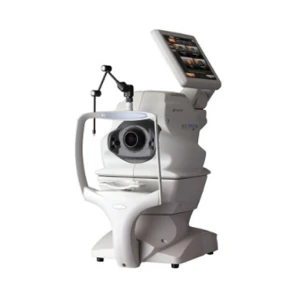
TOPCON OCT-1
무산동 안저 촬영 장비입니다. [확인 필요: 세부 사양 및 모델명 확인 중]
백내장 · 전안부 정밀검사 장비
오차를 줄인 인공수정체 계산 및 안전한 수술 설계를 위한 정밀 계측 시스템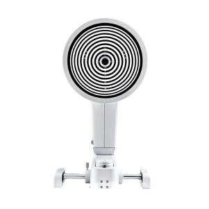
Oculus Keratograph 5M
안구건조증 검사 장비. 눈물층 안정성, 눈물막 높이, 마이봄샘 상태 등을 비침습적으로 검사합니다.
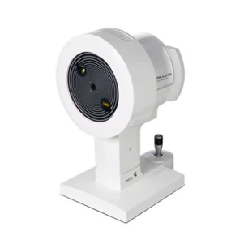
Ziemer Galilei G4
3차원 전안부 분석 장비. 각막 형태와 두께, 전안부 구조를 분석합니다.
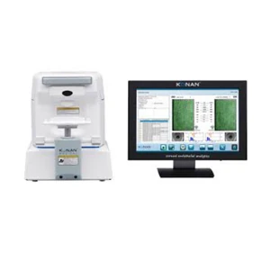
KONAN SP-9000
각막내피세포 검사 장비(스페큘러 현미경). 각막 안쪽 세포의 수와 모양을 촬영합니다.
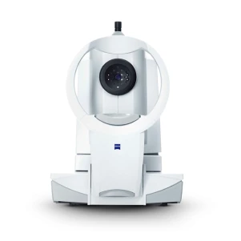
Zeiss IOL Master 700
광학 생체계측기. 안축장, 각막 곡률, 전방 깊이 등을 측정해 인공수정체 도수 계산에 활용합니다.
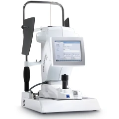
Zeiss IOL Master 500
광학 생체계측기. 안축장 등을 비접촉으로 측정해 인공수정체 도수 계산에 활용합니다.
수술 · 현미경 장비
안전하고 정교한 수술 집도를 위한 수술실 장비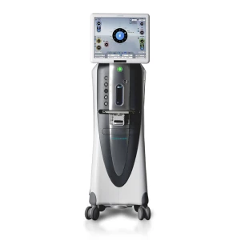
Stellaris
백내장 초음파 유화흡입술에 사용하는 수술장비입니다. [확인 필요]
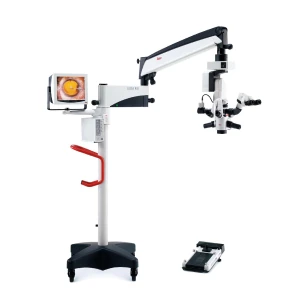
Leica 822
안과 수술용 현미경. 수술 부위를 확대해 보며 수술합니다.
레이저 · 피부관리 장비
녹내장·망막·후발백내장·안구건조증 치료 및 안성형 시술 후 관리 장비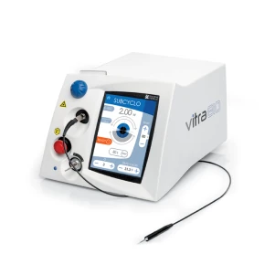
Vitra 810
810nm 다이오드 레이저. 경공막 모양체 광응고술(SubCyclo)로 진행된 녹내장을 치료하며, 망막 레이저 치료에도 사용합니다.
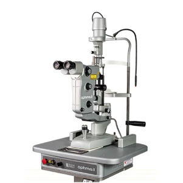
Optimis II
슬릿램프 일체형 Nd:YAG 레이저(1064nm). 백내장 수술 후 생기는 후낭 혼탁의 절개와 녹내장 레이저 홍채절개술에 사용합니다.
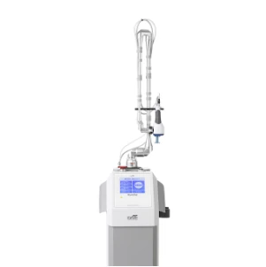
DS-40UB
안과·피부 영역의 병변 치료에 사용하는 CO2(탄산가스) 레이저입니다. 펄스 지속시간과 출력을 세밀하게 조절할 수 있습니다.
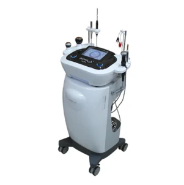
DERMA-S Ultra
초음파·이온 도입·냉각/온열 기능을 갖춘 복합 피부관리 장비. 안성형·레이저 시술 후 피부 진정과 재생 관리에 사용합니다.
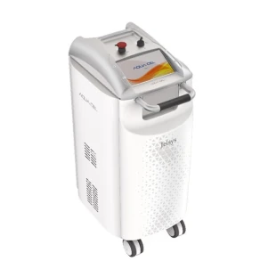
Jeisys AQUA Cel
피부에 열을 발생시켜 눈꺼풀 기름샘의 기능을 회복시키고 눈물층을 두껍게 해 안구건조증을 완화하는 열치료 장비입니다.
본 내용은 일반적인 의학 정보이며 개인에 따라 결과가 다를 수 있습니다. 정확한 진단과 치료는 전문의 상담 후 결정됩니다.